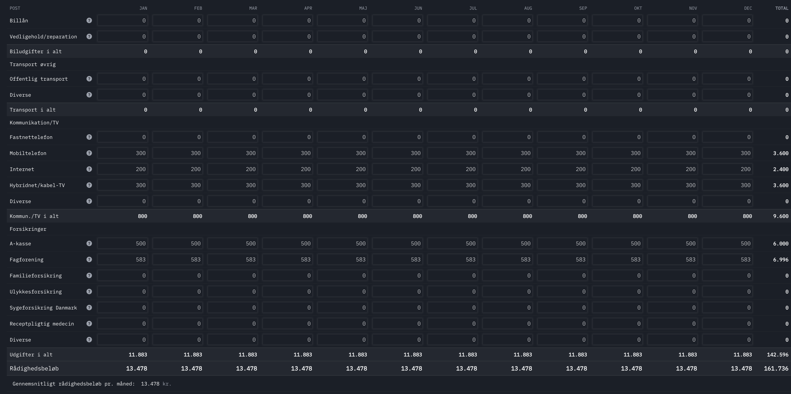
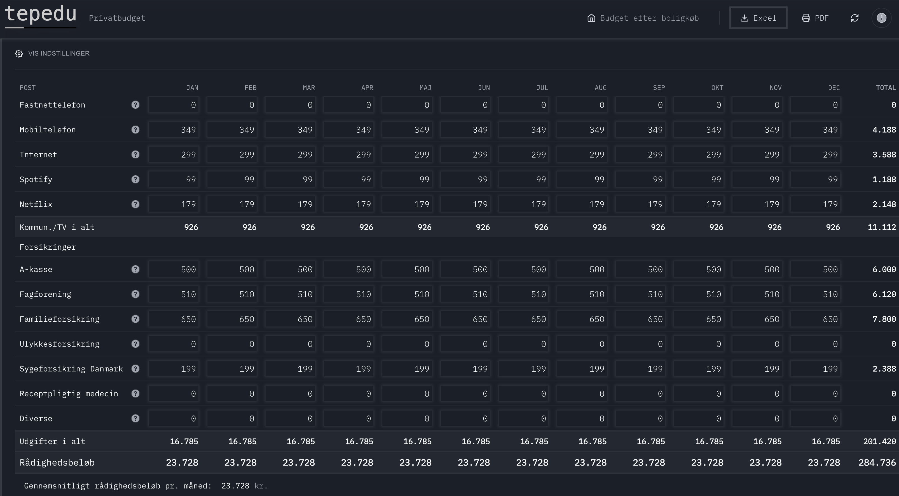
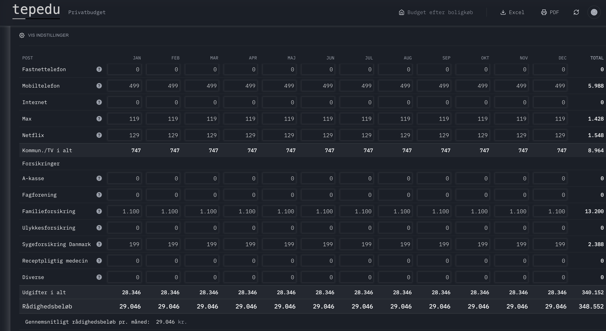
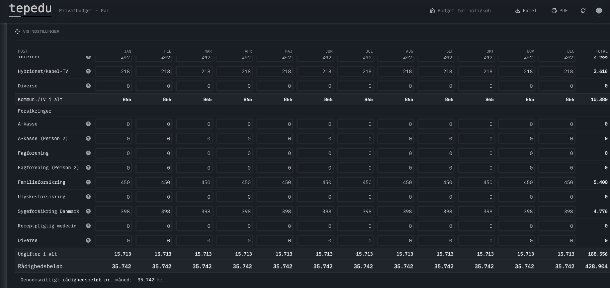

2. Kreditvurdering og Budget
(lav risiko)
(enlig, md.)
(par, md.)
(pr. barn, md.)
En sund privatøkonomi starter med et realistisk budget og en forståelse for de mekanismer, banker og realkreditinstitutter bruger til at vurdere kunder. I dette kapitel gennemgår vi fundamentet for finansiel rådgivning: Fra den basale budgetlægning til komplekse kreditvurderinger, og hvordan man som rådgiver navigerer i spændingsfeltet mellem lovkrav og kundens drømme.
Vi gennemgår endvidere beskatningen af ægtefæller, da ægteskabet juridisk og økonomisk set er en af de vigtigste kontrakter, en kunde kan indgå. Forståelsen af sambeskatning er central for korrekt rådgivning af par.
2.1 Kreditvurderingens Grundbillede
Når en finansiel virksomhed skal vurdere, om en kunde kan godkendes til et lån, sker det på baggrund af en kreditvurdering. Lovgivningsmæssigt er dette funderet i Bekendtgørelse om god skik for finansielle virksomheder samt Kreditaftaleloven, der pålægger långiver en forpligtelse til at sikre, at kunden ikke gældsættes uansvarligt.
I pengeinstitutterne bygger en kreditvurdering på tre overordnede parametre. Mangler ét af disse tre elementer — uanset hvor stærke de to andre er — risikerer kundens økonomi at bryde sammen, og lånoptagelsen betragtes som uansvarlig. Det er netop denne logik, der forklarer, hvorfor selv kunder med meget høje indkomster nogle gange kan få afslag på lån. I praksis navigerer rådgiveren derfor systematisk efter disse tre parametre:
Hvad tester det? Om kunden måned for måned kan betale sine regninger — og stadig have penge til mad, tøj og uforudsete udgifter — kundens reelle økonomiske handlerum.
Men hans budget afslører problemet: husleje 14.500 kr. + to billån 8.200 kr. + forsikringer og abonnementer 4.500 kr. Det efterlader kun 3.800 kr./md. til mad, tøj og alt andet. Finanstilsynets retningslinje er 8.500 kr./md. for en enlig. Mange banker opererer i praksis med lavere interne minimumskrav — typisk 6.000-7.000 kr. — men selv det er Lars langt fra at opfylde.
Udfald: Afslag. Kravet til rådighedsbeløb er ikke opfyldt — og dette kan hverken afhjælpes af den lave gæld eller af opsparingen.
Hvad tester det? Om den samlede gæld er bæredygtig over tid ift. indkomsten — og om kunden kan modstå rentestigninger eller jobskifte.
Problemet er hendes samlede gældshistorik: eksisterende billån (180.000 kr.), SU-lån (120.000 kr.) og nu et ønsket boliglån på 3,7 mio. kr. giver en samlet gæld på ca. 4 mio. kr. — svarende til en gældsfaktor på 5,5.
Udfald: Banken kan ikke godkende lånet i den ønskede form. Sofie tilbydes et mindre lån med fast rente og obligatorisk afdrag — indtil gælden er bragt ned under faktor 4.
Hvad tester det? Om kunden har en finansiel buffer — til udbetaling, uforudsete udgifter og som tegn på evnen til at spare op.
Men de brugte de seneste to år på at istandsætte deres nuværende lejebolig og finansierede en større biludskiftning. Samlet opsparing: 45.000 kr. Boligen de ønsker at købe koster 4,2 mio. kr. — kravet til egenfinansiering er minimum 5 %, svarende til 210.000 kr.
Udfald: Banken afviser. Trods stærk indkomst og lav gæld mangler egenfinansieringen. Parret må spare op i 12-18 måneder, inden sagen kan genoptages.
Rådgiver-tip: Brug kreditskamlen som et hurtigt screening-redskab allerede inden kundemødet. Er alle tre parametre solide? Oftest er det ikke ét svagt parameter, der udgør problemet — det er kombinationen. En stærk indkomst kompenserer ikke for et negativt rådighedsbeløb. En stor formue kompenserer heller ikke for en gældsfaktor på 5,5. Identificér det svageste ben og arbejd med det først, inden du tager fat i de øvrige aspekter af rådgivningen.
2.2 Budgetlægning i praksis
Budgettet er rådgiverens vigtigste værktøj til at afdække kundens økonomiske formåen. Et budget opdeles typisk i to hovedkategorier: Indtægter og Udgifter. Udgifterne underopdeles i faste og variable udgifter.
Indtægter
Her medregnes alle løbende indtægter efter skat (udbetalt).
- Lønindkomst (husk at bruge nettoløn efter AM-bidrag og A-skat)
- Offentlige ydelser (SU, Dagpenge, Pension)
- Børnefamilieydelser
- Boligsikring
- Renteindtægter og udbytter (hvis de er stabile)
Udgifter
Opdeles i faste og variable.
- Bolig: Husleje/Boligafgift, Ejendomsskatter, Forbrug (El, Vand, Varme).
- Transport: Billån, grøn ejerafgift, forsikring, brændstof, rejsekort.
- Husholdning: Forsikringer, A-kasse, Fagforening, Institution.
- Abonnementer: Streaming, Telefon, Internet, Fitness.
Børnecheck, børnebidrag og øvrige børneydelser
Når kunden har børn, spiller de offentlige ydelser til børn og eventuelle børnebidrag en vigtig rolle i både budget og kreditvurdering. Her er det afgørende at skelne mellem skattefri og skattepligtige indtægter samt mellem ydelser, der udbetales af det offentlige, og bidrag der betales mellem forældre.
| Ydelse / bidrag | Skattemæssig behandling (2026) | Cirka størrelse | Behandling i budget og skatteskabelon |
|---|---|---|---|
| Børne- og ungeydelse (børnecheck) | Skattefri offentlig ydelse til forældre med hjemmeboende børn/unge under 18 år. Indkomstafhængig og aftrappes ved høje forældreindkomster. | Ca. 1.000–1.700 kr. pr. barn pr. måned afhængigt af alder (lavest for 15–17 år, højest for 0–2 år). | Medtages som stabil nettoindtægt i budgettet under Børnefamilieydelser. Indgår ikke som skattepligtig indkomst i skatteskabelonen og skal derfor ikke tastes ind som indkomst på. |
| Særlige børnetilskud og andre sociale ydelser til børn | Som udgangspunkt skattefrie sociale ydelser (fx til enlige forsørgere eller særlige familiesituationer). Visse tilskud giver indirekte skattelettelser via forhøjede fradrag. | Typisk i størrelsesordenen 1.500–2.500 kr. pr. barn pr. måned for enlige forsørgere (afhængigt af ordning og barnets alder). | Medtages som nettoindtægt i budgettet. Selve tilskuddet er ikke skattepligtig personlig indkomst i skabelonen, men kan i skattesystemet udløse større fradrag (fx forhøjet beskæftigelsesfradrag), som vises i skatteberegningen uden at kunden indtaster tilskuddet som et fradrag. |
| Ordinært børnebidrag og ekstra børnebidrag | Betales typisk fra den ene forælder til den anden til barnets forsørgelse. Betaler har normalt fradragsret; modtager beskattes efter de gældende regler for løbende underholdsbidrag. | Ordinært bidrag fastsat af staten ligger typisk omkring 1.600–1.800 kr. pr. barn pr. måned, evt. med tillæg ved ekstra bidrag. | For betaleren: registreres som fradragsberettiget udgift i skatteskabelonen (ligningsmæssigt fradrag) og reducerer den skattepligtige indkomst. For modtageren: behandles som løbende økonomisk støtte til barnet og medregnes som indtægt i budgettet (netto). |
I budgetterne skal alle beløb optræde i nettotermer (det kunden faktisk får udbetalt eller betaler), mens skatteskabelonen alene arbejder med skattepligtig indkomst, fradrag og skat. En systematisk rådgiver sørger derfor for, at skattefrie børneydelser ikke bliver overvurderet i vurderingen af kundens betalingsevne, og at fradragsberettigede børnebidrag korrekt reducerer den skattepligtige indkomst for betaleren, uden at barnets husstandsindkomst kunstigt forstørres. Skattefrie børneydelser skal således ikke indtastes som fradrag i skatteberegningen – deres betydning ligger i budgettet og i de bagvedliggende skatteregler, ikke i ekstra felter i beregneren.
Rådgiver-tip: Mange kunder glemmer de "skjulte" faste udgifter som streamingtjenester og softwareabonnementer (iCloud, Spotify, Netflix). Sørg altid for at gennemgå betalingsoversigten med kunden.
Fordeling af forbrug
Figuren til venstre viser de typiske andele af et gennemsnitligt budget for en dansk husstand. Det er særlig vigtigt for rådgiveren at overveje vægtningen, idet:
- Bolig & Ejendom: Udgør langt størstedelen af forbruget (ofte 30%+), hvilket minimerer buffer-pladsen.
- Transport & Fødevarer: Er vitale omkostninger som ikke uden videre kan nedskaleres af kunden, og som påvirker direkte rådighedsbeløbet.
Kilde: Danmarks Statistik (2025).
2.2.1 Fra bruttoløn til rådighedsbeløb
For at forstå en kundes reelle økonomiske råderum er det afgørende at kunne følge pengestrømmen fra bruttoløn hele vejen ned til det endelige rådighedsbeløb. Processen kan opdeles i tre faser:
- Fase 1 — Skat: Bruttoløn reduceres først med 8 % i AM-bidrag (arbejdsmarkedsbidrag), derefter beregnes bundskat (12,01 %) og kommuneskat (gennemsnitligt ca. 25 %) af den skattepligtige indkomst efter personfradrag (54.100 kr. i 2026). For de fleste lønmodtagere udgør den samlede skat mellem 35-40 % af bruttolønnen.
- Fase 2 — Faste udgifter: Af nettolønnen (det udbetalte beløb) betales først de faste, ikke-forhandlingsbare udgifter: husleje eller boligafgift, el/vand/varme, forsikringer, transport, abonnementer og eventuelle afdrag på lån. Disse udgifter er "låste" — de kan kun ændres på mellemlang sigt (f.eks. ved flytning eller opsigelse af abonnement).
- Fase 3 — Rådighedsbeløb: Det resterende beløb er kundens reelle økonomiske frihed. Det er dette beløb, Finanstilsynet og bankerne fokuserer på, når de vurderer, om kunden kan bære et nyt lån. Et for lavt rådighedsbeløb er den hyppigste årsag til afslag på boliglån.
Sankey-diagrammet herunder visualiserer denne strøm for en gennemsnitlig enlig lønmodtager med en bruttoløn på 480.000 kr. om året (svarende til ca. 40.000 kr./md.). Bemærk, hvor stor en andel af bruttolønnen der afgår til skat og faste udgifter, inden kunden har midler til det løbende forbrug.
2.2.2 Rådighedsbeløb: Hvad skal være tilbage?
Rådighedsbeløbet er det beløb, der er tilbage til mad, tøj, fornøjelser, gaver, ferier og uforudsete udgifter. Det er dette beløb, der skal dække husholdningens daglige og løbende forbrugsbehov.
Finanstilsynet stiller krav om, at kunden skal have et "rimeligt" rådighedsbeløb. Hvad der er rimeligt, varierer, men bankerne opererer typisk med interne mindstekrav for at sikre, at kunden bevarer en tilstrækkelig betalingsevne efter et boligkøb.
| Husstandstype | Anbefalet Rådighedsbeløb (md.) | Hvad dækker det? |
|---|---|---|
| Enlig | 7.000 - 8.500 kr. | Mad, tøj, personlig pleje, transport (hvis ikke fast), ferie. |
| Samlevende par | 11.500 - 14.500 kr. | Lavere end 2 x enlig pga. stordriftsfordele (fælles internet, streaming, indboforsikring). |
| Hjemmeboende barn (0-6 år) | + 2.500 - 3.000 kr. | Bleer, mad, tøj. Institutionsbetaling ligger typisk under faste udgifter. |
| Hjemmeboende barn (7-18 år) | + 3.500 - 4.500 kr. | Fritidsinteresser, tøj (mærkevarer), lommepenge, mobil. |
2.2.3 Praktiske budgetberegninger: Cases
I de følgende cases opstilles konkrete eksempler på månedlige budgetter. Casene viser, hvordan den disponible indkomst efter skat fordeles på faste udgifter, og hvad der er tilbage som rådighedsbeløb. Budgetterne er opsat i privatbudgetberegneren på skat.tepedu.dk.
Case 1: Theis Hansen i København (480.000 kr. brutto)
Theis Hansen har en disponibel årsindkomst på 304.327 kr., svarende til 25.361 kr. pr. måned efter skat. Med en lejlighed i København og standard faste udgifter ser budgettet således ud:
| Post | Beløb pr. måned |
|---|---|
| INDTÆGTER | |
| Løn, efter skat | 25.361 kr. |
| UDGIFTER — Bolig | |
| Husleje | 8.000 kr. |
| Varme | 1.500 kr. |
| Elektricitet | 500 kr. |
| UDGIFTER — Kommunikation | |
| Mobiltelefon | 300 kr. |
| Internet (bredbånd) | 200 kr. |
| Spotify (musikabonnement) | 109 kr. |
| Viaplay (filmabonnement) | 189 kr. |
| UDGIFTER — Forsikring og faglig organisering | |
| A-kasse | 500 kr. |
| Fagforening (3F Privat & Finans) | 583 kr. |
| Udgifter i alt | 11.881 kr. |
| Rådighedsbeløb | 13.480 kr./md. |

Rådgiver-analyse: Med et rådighedsbeløb på 13.480 kr. pr. måned ligger gennemsnitslønmodtageren over Finanstilsynets vejledende minimum på ca. 7.000–8.500 kr. for en enlig. Der er plads til mad, tøj og opsparing, men ikke til store uforudsete udgifter. Boligudgiften på 8.000 kr. udgør 31,5 % af nettoindkomsten — i den høje ende for en enlig.
Case 2: Camilla Nordholt – IT-chef i København (780.000 kr. brutto)
Camilla Nordholt er IT-chef og har en disponibel årsindkomst på 486.154 kr., svarende til 40.513 kr. pr. måned netto.
| Post | Beløb | Periode |
|---|---|---|
| Løn, efter skat | 40.513 kr. | pr. md. |
| Husleje (Vesterbro) | 12.000 kr. | pr. md. |
| Varme | 1.500 kr. | pr. md. |
| Elektricitet | 500 kr. | pr. md. |
| Mobiltelefon | 349 kr. | pr. md. |
| Internet (fiber) | 299 kr. | pr. md. |
| Netflix (standardabonnement) | 179 kr. | pr. md. |
| Spotify (musikabonnement) | 99 kr. | pr. md. |
| A-kasse (CA a-kasse) | 500 kr. | pr. md. |
| IDA-kontingent (fagforening) | 3.060 kr. | halvårligt |
| Familieforsikring (ulykke + liv) | 7.800 kr. | pr. år |
| Sygeforsikring Danmark | 2.388 kr. | pr. år |
| Post | Beløb pr. måned |
|---|---|
| INDTÆGTER | |
| Løn, efter skat | 40.513 kr. |
| UDGIFTER — Bolig | |
| Husleje | 12.000 kr. |
| Varme | 1.500 kr. |
| Elektricitet | 500 kr. |
| UDGIFTER — Kommunikation / TV | |
| Mobiltelefon | 349 kr. |
| Internet (fiber) | 299 kr. |
| Hybridnet/kabel-TV (Netflix) | 179 kr. |
| Hybridnet/kabel-TV (Spotify) | 99 kr. |
| UDGIFTER — Forsikring og faglig organisering | |
| A-kasse (CA a-kasse) | 500 kr. |
| Fagforening (IDA, 3.060 kr./halvår ÷ 6) | 510 kr. |
| Familieforsikring (7.800 kr./år ÷ 12) | 650 kr. |
| Sygeforsikring Danmark (2.388 kr./år ÷ 12) | 199 kr. |
| Udgifter i alt | 16.785 kr. |
| Rådighedsbeløb | 23.728 kr./md. |

Rådgiver-analyse: Camilla Nordholdts rådighedsbeløb på 23.728 kr. pr. måned er solidt og giver en betydelig buffer til opsparing og uforudsete udgifter. Boligudgiften på 12.000 kr. udgør 29,6 % af nettoindkomsten — acceptabelt for en storbylejer. Bemærk, at IDA-kontingentet og forsikringerne faktureres halvårligt henholdsvis årligt; i budgettet omregnes disse til månedlige beløb for at give et retvisende billede af den løbende betalingsevne.
Case 3: Anders Riis-Thomsen – Adm. direktør i København (1.200.000 kr. brutto)
Anders Riis-Thomsen er administrerende direktør og har en disponibel årsindkomst på 688.699 kr., svarende til 57.392 kr. pr. måned netto. Som adm. direktør er Anders ikke overenskomstdækket og har hverken A-kasse-pligt eller fagforeningskontingent i traditionel forstand — ansættelsesvilkår reguleres individuelt via direktørkontrakten.
| Post | Beløb | Periode |
|---|---|---|
| Løn, efter skat | 57.392 kr. | pr. md. |
| Husleje (Frederiksberg) | 20.000 kr. | pr. md. |
| Varme | 2.000 kr. | pr. md. |
| Elektricitet | 800 kr. | pr. md. |
| Benzin | 2.000 kr. | pr. md. |
| Mobiltelefon (premium) | 499 kr. | pr. md. |
| HBO Max (serieabonnement) | 119 kr. | pr. md. |
| Discovery+ Sport (sportsabonnement) | 129 kr. | pr. md. |
| Bilforsikring (kaskoforsikring) | 9.000 kr. | halvårligt |
| Familieforsikring (liv + kritisk sygdom) | 13.200 kr. | pr. år |
| Sygeforsikring Danmark | 2.388 kr. | pr. år |
| Post | Beløb pr. måned |
|---|---|
| INDTÆGTER | |
| Løn, efter skat | 57.392 kr. |
| UDGIFTER — Bolig | |
| Husleje | 20.000 kr. |
| Varme | 2.000 kr. |
| Elektricitet | 800 kr. |
| UDGIFTER — Bil | |
| Forsikring (9.000 kr./halvår ÷ 6) | 1.500 kr. |
| Benzin | 2.000 kr. |
| UDGIFTER — Kommunikation / TV | |
| Mobiltelefon | 499 kr. |
| Hybridnet/kabel-TV (HBO Max) | 119 kr. |
| Hybridnet/kabel-TV (Discovery+ Sport) | 129 kr. |
| UDGIFTER — Forsikringer | |
| Familieforsikring (13.200 kr./år ÷ 12) | 1.100 kr. |
| Sygeforsikring Danmark (2.388 kr./år ÷ 12) | 199 kr. |
| Udgifter i alt | 28.346 kr. |
| Rådighedsbeløb | 29.046 kr./md. |

Rådgiver-analyse: Anders Riis-Thomsens rådighedsbeløb på 29.046 kr. pr. måned er markant over Finanstilsynets minimumsgrænse. Boligudgiften på 20.000 kr. udgør 34,8 % af nettoindkomsten. Som adm. direktør er Anders ikke A-kasse-pligtig — direktørkontrakter regulerer fratrædelsesvilkår individuelt. Bilforsikring og familieforsikring faktureres halvårligt henholdsvis årligt og er i budgettet omregnet til månedlige beløb.
| Case | Bruttoløn | Netto/md. | Udgifter/md. | Rådighedsbeløb | Effektiv skat |
|---|---|---|---|---|---|
| Theis Hansen (gennemsnit) | 480.000 kr. | 25.361 kr. | 11.881 kr. | 13.480 kr. | 36,6 % |
| Camilla Nordholt (IT-chef) | 780.000 kr. | 40.513 kr. | 16.785 kr. | 23.728 kr. | 37,7 % |
| Anders Riis-Thomsen (adm. dir.) | 1.200.000 kr. | 57.392 kr. | 28.346 kr. | 29.046 kr. | 42,6 % |
2.3 Gældsfaktor: Loftet over boligprisen
Gældsfaktoren er et nøgletal, der hurtigt indikerer, hvor hårdt en kunde er gældsat ift. indtægten. Det er især relevant ved boligkøb i vækstområder (København og Aarhus).
Hvad tæller som gæld? Al gæld medregnes: Realkreditlån, boliglån, billån, SU-lån, forbrugslån, kassekreditter og gæld til det offentlige.
| Risikoklasse | Gældsfaktor | Konsekvens for kunden (Vækstområder) |
|---|---|---|
| Lav risiko | < 3,5 | Adgang til alle lånetyper (F-kort, afdragsfrihed mv.). |
| Middel risiko | 3,5 - 4,0 | Øget opmærksomhed. Kunden skal være robust til at klare rentestigninger. Ved > 4 skal der typisk afdrages eller vælges fast rente. |
| Høj risiko | > 4,0 | Begrænsning: Kunden SKAL typisk vælge fast rente med afdrag. Risikable lånetyper er udelukket. Meget høj gældsfaktor (>5) kræver særdeles høj formue. |
Udvikling i Boligpriser vs. Lønninger
Hvorfor er gældsfaktoren blevet så central i dansk boligøkonomi? Svaret ligger i den markante afkobling mellem boligpriser og lønninger, der er sket over det seneste årti. Ifølge data fra Finans Danmark og Danmarks Statistik er boligpriserne i København steget med over 65 % siden 2016, mens lønningerne kun er steget med ca. 35 % i samme periode. Denne divergens indebærer, at førstegangskøbere i dag skal optage relativt større lån end tidligere generationer for at erhverve en sammenlignelig bolig.
Konsekvensen er, at gældsfaktoren for en typisk førstegangskøber i København i dag ligger mellem 3,5 og 4,5 — svarende til den gule eller røde zone. I provinsen, hvor boligpriserne ikke er steget i tilsvarende omfang, er situationen markant bedre: her ligger den gennemsnitlige gældsfaktor typisk under 3,0.
Grafen herunder viser udviklingen i et boligprisindeks for København sammenlignet med det generelle lønindeks (2016 = 100). Læg mærke til, hvordan gabet mellem de to kurver vokser år for år — dette gab er kerneproblemet i den danske boligøkonomi.
2.3.1 Boligfinansiering som budgettets tunge post
Boligen udgør for langt de fleste boligejere den absolut største faste udgift. Når vi betragter rådighedsbeløbet, indtager boligydelsen (rente, afdrag, ejendomsskat og forsikring) den primære andel af de faste omkostninger.
Bemærk: En dybdegående gennemgang af selve finansieringskilderne (Ejerbolig, Andelsbolig, Realkredit og Banklån) behandles udførligt i det næste kapitel (Kapitel 3: Bolig), hvor vi også ser på de konkrete boligskatter for 2026. Her i Kapitel 2 skal det blot bemærkes, at boligudgiften er fuldstændigt styrende for de grænseværdier for gældsfaktor og rådighedsbeløb, som kreditvurderingen bygger på.
2.3.2 Husholdningernes gæld i international sammenligning
Danmark indtager en bemærkelsesværdig førsteplads i OECD's opgørelse over husholdningsgæld målt i forhold til disponibel indkomst. Med en gældskvote på ca. 236 % (2024) ligger danske husholdninger markant over gennemsnittet på ca. 120 %. Det betyder, at den gennemsnitlige danske husstand skylder 2,4 gange sin årlige disponible indkomst.
Billedet er imidlertid nuanceret. Den høje danske gæld skal ses i sammenhæng med tre faktorer:
- Pensionsformue: Danmark har samtidig en af verdens højeste pensionsformuer. Nettoformuen (aktiver minus gæld) er positiv for de fleste danske husholdninger.
- Realkreditsystemet: Størstedelen af gælden er realkreditgæld med lav rente og lang løbetid — ikke dyr forbrugsgæld. Realkreditsystemet er internationalt anerkendt som et af de mest stabile.
- Rentefradrag: Det danske skattesystem giver fradrag for renteudgifter, hvilket reducerer den reelle renteudgift med ca. 25-34 %. Dette gør gælden billigere i Danmark end i mange andre lande.
Ikke desto mindre gør den høje gæld danske husholdninger sårbare over for rentestigninger. En stigning i renten på blot 1 procentpoint øger de samlede renteudgifter for danske husholdninger med ca. 33 mia. kr. årligt ifølge Danmarks Nationalbank. Det er denne sårbarhed, der gør gældsfaktorberegningen så vigtig i kreditvurderingen.
Figur 2.5 — Husholdningernes gæld i % af disponibel indkomst. Kilde: OECD (2024), Eurostat.2.4 Beskatning af Par
Ægteskabet er ikke alene et privat valg; det er en juridisk og økonomisk kontrakt med vidtrækkende konsekvenser. I det danske skattesystem skelnes der skarpt mellem enlige/ugifte samlevende og ægtefæller. Denne forskel er kritisk viden for en finansøkonom, da den kan flytte tusindvis af kroner i budgettet.
2.4.1 Sambeskatningens Principper
Sambeskatning betyder, at skattevæsenet vurderer ægtefællernes samlede økonomi. Det gælder dog ikke for topskat og AM-bidrag, der er individuelle, men for bundfradrag, personfradrag og kapitalindkomst.
Hver person har i 2026 et personfradrag på 54.100 kr.
Ugifte: Hvis du ikke tjener nok til at bruge det, går det tabt.
Gifte: Restbeløbet overføres automatisk til ægtefællen, så intet går tabt.
Positiv kapitalindkomst (renter m.m.) beskattes progressivt. Der er en lav progressionsgrænse på 52.400 kr.
Gifte: Hvis ægtefællerne er sambeskattede, er grænsen det dobbelte: 104.800 kr. uanset, hvem der har tjent pengene. Dette er en betydelig fordel for par med opsparing.
Hvor meget betyder ægteskab?
| Scenario | Ugift (Samlevende) | Gift (Ægtefæller) | Forskel |
|---|---|---|---|
| Overførsel af personfradrag | 0 kr. | Op til ca. 20.000 kr. i sparet skat (hvis den ene ikke har indkomst). | +20.000 kr. |
| Grænse for lav kapitalindkomstskat | 52.400 kr. pr. person | 104.800 kr. samlet | Højere grænse |
| Arveret (Juridisk) | Ingen arveret (0 kr.) | Automatisk arveret | Sikkerhed |
| Hæftelse for gæld | Ingen hæftelse (Særskilt) | Ingen hæftelse (Særskilt)* | Ingen* |
2.4.2 Skattestrøm: Ugift par (Jonas & Sara)
Når Jonas og Sara er ugifte samlevende, behandles de skattemæssigt som to helt separate individer. SKAT kender ikke til deres parforhold — de er to enkeltstående skatteydere. Det har flere konsekvenser:
- Ingen overførsel af personfradrag: Jonas og Sara udnytter begge deres personfradrag fuldt ved deres nuværende indkomster. Men skulle Jonas gå på barsel, blive ledig eller skifte til studietid med lavere indkomst, ville det uudnyttede personfradrag gå tabt. Sara kan ikke "overtage" det som ugift samlever.
- Individuel kapitalindkomstgrænse: Hver person har sin egen grænse på 52.400 kr. for lav beskatning af positiv kapitalindkomst. Uanset om den ene har 0 kr. og den anden 80.000 kr., beskattes overskydende beløb hårdere.
- Renteudgifter: Fradrag for renteudgifter tilhører den person, der juridisk hæfter for lånet. Står begge på lånet, deles det 50/50 — uanset om det er skattemæssigt optimalt.
- Ingen arveret: Dør Jonas, har Sara ingen automatisk arveret. Boligen, bankkontoen og pensionen fordeles efter arveloven til Jonas' familie — ikke til Sara.
Sankey-diagrammet herunder viser den fulde skattestrøm for Jonas og Sara som ugifte, med individuel beregning af AM-bidrag, bundskat og kommuneskat.
2.4.3 Skattestrøm: Gift par (Jonas & Sara)
Når Jonas og Sara gifter sig, aktiveres sambeskatningen. Det er vigtigt at understrege: sambeskatning betyder ikke, at parret betaler skat af deres samlede indkomst som én person. Tværtimod beregnes skatten stadig individuelt — men med én afgørende forskel: visse fradrag kan nu overføres mellem ægtefællerne.
De vigtigste mekanismer i sambeskatningen er:
- Personfradragsoverførsel: Hvis Jonas ikke udnytter hele sit personfradrag (f.eks. pga. barsel, ledighed eller studier), overføres det resterende automatisk til Sara. Skatteværdien af et fuldt uudnyttet personfradrag er ca. 20.000 kr. (54.100 kr. × ca. 37 % kommuneskat+bundskat).
- Dobbelt kapitalindkomstgrænse: Ægtefæller deler en fælles progressionsgrænse for positiv kapitalindkomst på 104.800 kr. (2 × 52.400 kr.), uanset hvem af dem der har indtjent kapitalindkomsten. Det betyder, at et par med f.eks. 90.000 kr. i samlet positiv kapitalindkomst slet ikke rammer den høje beskatning.
- Negativ kapitalindkomst: Renteudgifter kan allokeres skattemæssigt optimalt mellem ægtefællerne, så fradraget udnyttes bedst muligt. I praksis sker dette automatisk ved SKATs årsopgørelse.
- AM-bidrag og topskat: Disse er fortsat individuelle — sambeskatningen ændrer ikke beregningen af AM-bidrag (8 %) eller topskat (15 % over 777.900 kr.). Det er kun bund- og kommuneskat samt fradragsoverførsel, der påvirkes.
Sankey-diagrammet herunder viser den samlede skattestrøm for Jonas og Sara som ægtefæller. Sammenlign med det forrige diagram (ugift) og bemærk den højere disponible indkomst.
Case: Jonas og Sara – Samlevende par i Aarhus
Jonas (28 år, sygeplejerske, 400.000 kr. brutto) og Sara (27 år, ingeniør, 450.000 kr. brutto) er
samlevende og har tilsammen en årsindkomst på 850.000 kr. brutto.
Deres samlede månedlige udbetaling er 44.754 kr. netto som ugift (Sara: 22.421 kr.,
Jonas: 22.333 kr.) og 44.788 kr. som gift.
Forskellen i skat mellem at være gift og ugift er altså p.t. meget lille for parret (ca. 34
kr./md.),
fordi begge arbejder fuldtid fuldt ud. Men hvis Jonas f.eks. vælger at læse videre og får en
lavere indkomst på SU, vil parret kunne opnå en stor skattebesparelse ved at blive gift.
Ægtefæller kan nemlig overføre uudnyttet personfradrag til hinanden, hvilket vil mindske Saras
skat betydeligt.
Bemærk også, at Sara har en positiv kapitalindkomst på 80.000 kr. årligt fra
renteindtægter (ca. 6.667 kr./md.).
Parret har et boliglån i banken og de betaler tilsammen 20.000 kr. i renteudgifter om året.
Skatten heraf er indregnet i hendes løn, så hun får mindre løndel udbetalt. Men udbyttet på
6.667 kr. pr. md. optræder separat, som medregnes her i budgettet som nettoindtægt.
De betaler kirkeskat, har følgende afstande til arbejde (Sara: 14 km tur/retur, Jonas: 7 km
tur/retur), og har fravalgt a-kasse og
fagforening efter personlig overbevisning.
Jonas og Sara elsker hinanden og beslutter sig for at blive gift, selvom der ikke er nogen
økonomisk gevinst ved det for dem.
Rådighedsbeløbet beregnes for husstanden samlet.
| Post | Beløb pr. måned |
|---|---|
| INDTÆGTER | |
| Sara — løn, efter skat | 22.732 kr. |
| Jonas — løn, efter skat | 22.056 kr. |
| Sara — renter og udbytte | 6.667 kr. |
| Samlet indkomst | 51.455 kr. |
| UDGIFTER — Bolig | |
| Husleje (andelsbolig) | 4.500 kr. |
| Låneydelse, samlet banklån | 4.500 kr. |
| Varme | 1.200 kr. |
| Elektricitet | 800 kr. |
| UDGIFTER — Transport | |
| Transport Jonas | 1.800 kr. |
| Transport Sara | 1.200 kr. |
| UDGIFTER — Kommunikation / TV | |
| Mobiltelefon (samlet) | 398 kr. |
| Internet | 249 kr. |
| Hybridnet/kabel-TV (streaming) | 218 kr. |
| UDGIFTER — Forsikring | |
| Indboforsikring | 450 kr. |
| Sygeforsikring Danmark (2 pers.) | 398 kr. |
| Udgifter i alt | 15.713 kr. |
| Rådighedsbeløb (husstand samlet) | 35.742 kr./md. |

Rådgiver-analyse: Jonas og Saras samlede rådighedsbeløb på hele 35.742 kr. pr. måned er væsentligt over Finanstilsynets vejledende minimum for et samlevende par (ca. 11.500–14.500 kr./md.). Låneydelserne på banklånet udgør beskedne 4.500 kr., hvilket i kombination med deres fravalg af a-kasse og fagforeningsudgifter efterlader et enormt råderum. Selvom banken vil stressteste budgettet med over normal rente, vil de have overflod af likviditet. Som rådgiver bør man dog gøre opmærksom på den store risiko de løber ved ikke at have sikret deres indtægt via a-kasse. Rådgiveren vil endvidere rådgive dem til at lægge en fast plan for afdrag og investering af de mellemværende likvider.
Sankey-diagrammet herunder opsummerer den månedlige pengestrøm fra parrets samlede indtægter til de respektive faste udgifter, som munder ud i deres enorme rådighedsbeløb på 35.742 kr.
2.5 Rentefradragets værdi i 2026
Rentefradraget er en af de mest værdifulde skattefordele for boligejere og låntagere i Danmark. Når en kunde har renteudgifter (f.eks. på et boliglån, billån eller SU-lån), modregnes en del af disse udgifter i skatten. Men fradragsværdien er ikke ens for alle kroner — den er progressiv og afhænger af beløbets størrelse.
I 2026 gælder følgende regler for negativ nettokapitalindkomst (renteudgifter minus renteindtægter):
- De første 50.000 kr. (100.000 kr. for ægtepar): Fradragsværdi ca. 33,6 %. Det betyder, at for hver 1.000 kr. i renteudgifter sparer kunden ca. 336 kr. i skat. Denne høje fradragsværdi skyldes, at fradraget påvirker både kommune- og bundskat.
- Beløb over 50.000 kr. (100.000 kr. for ægtepar): Fradragsværdi falder til ca. 25,6 %. Forskellen opstår, fordi den del af renteudgifterne, der overstiger grænsen, kun giver fradrag i kommuneskatten — ikke i bundskatten.
For Jonas og Sara med en årlig renteudgift på ca. 128.800 kr. (realkreditrente + bankrente) betyder det en årlig skattebesparelse på ca. 38.000-42.000 kr. — eller ca. 3.300 kr. pr. måned. Denne besparelse er allerede indregnet i deres budget, da skatten beregnes efter fradrag.
Rådgiver-tip: Husk at gøre kunden opmærksom på, at skatteværdien er højere for ægtepar (dobbelt grænse). Et ugift par med 150.000 kr. i renteudgifter "mister" skatteværdien på den del, der ligger over 50.000 kr. pr. person. Et gift par med samme renteudgifter har en samlet grænse på 100.000 kr. — og får dermed mere ud af fradraget. Dette er endnu et argument for at gifte sig, når man køber bolig sammen.
Rådgivningspointe: Grænsen på 50.000 kr. (100.000 kr. for ægtepar) er afgørende. En enlig med 80.000 kr. i renteudgifter "mister" skatteværdi på de 30.000 kr. over grænsen. Et gift par med samme renteudgifter har en samlet grænse på 100.000 kr. og får den høje skatteværdi på hele beløbet.
Grafen herunder sammenligner den absolutte skattebesparelse (i kroner) ved forskellige niveauer af renteudgifter — for henholdsvis en enlig og et par.
2.6 Ægtefælles personfradrag — en overset fordel
I Danmark er skat personlig — men for ægtepar gælder en vigtig undtagelse: uudnyttet personfradrag kan overføres til ægtefællen. Personfradraget i 2026 er 54.100 kr. Hvis den ene ægtefælle ikke har indkomst nok til at udnytte sit fulde fradrag, overføres resten automatisk.
ved fuld overførsel til ægtefælle
Samlevende har ikke denne ret
Eksempel: Sofie er på barsel og har en indkomst på 25.000 kr. i det pågældende år. Hendes personfradrag er 54.100 kr., men hun udnytter kun 25.000 kr. De resterende 29.100 kr. overføres automatisk til hendes mand Lars, som dermed betaler ca. 10.000–11.000 kr. mindre i skat det år.
Rådgivningspointe: Dette er et af de stærkeste argumenter for at gifte sig frem for blot at være samlevende, særligt når den ene part er på barsel, studerer eller er deltidsansat. For samlevende par gælder denne mulighed ikke — de betaler skat som to uafhængige personer.
Praktisk: Overførslen sker automatisk via årsopgørelsen og kræver ingen handling fra parret. Rådgiveren bør dog gøre kunden opmærksom på fordelen, da mange ikke er bevidste om den — og den kan have stor betydning for budgettet i år med asymmetrisk indkomst (barsel, studieår, sygdom).
2.7 Adfærdsøkonomi: Hvorfor fejler vi?
Selv når de regningsmæssige fakta er entydige, træffer kunder ofte irrationelle beslutninger. Som rådgiver er det ikke tilstrækkeligt at beherske reglerne — man skal tillige forstå de psykologiske mekanismer, der påvirker kundens adfærd. Inden for adfærdsøkonomi (Behavioral Finance) opererer man med tre centrale biasformer:
Loss Aversion
Kunder føler smerten ved et tab på 10.000 kr. dobbelt så stærkt som glæden ved en gevinst på 10.000 kr. Det gør dem for konservative — de undgår f.eks. at indbetale på pension af frygt for at "miste" likviditet nu.
Present Bias
Vi værdsætter 1.000 kr. i dag højere end 2.000 kr. om 10 år. Det forklarer, hvorfor mange underprioriterer pensionsopsparing, selvom skattefordelen er betydelig og risikofri.
Mentale konti
Kunder opdeler penge i "mentale konti" — "skattepenge", "opsparing", "forbrug" — og behandler dem forskelligt. En bonus betragtes som "ekstra" og bruges til forbrug, selvom den skattemæssigt er identisk med løn.
2.9.1 Case: Skatteoptimering af bonusindkomst
Simone har modtaget en bonus på 50.000 kr. og overvejer at anvende beløbet til forbrug. Som rådgiver præsenteres hun for følgende beregning:
Konklusion: Simone "betaler" kun 24.000 kr. i tabt forbrug for at få 50.000 kr. i pensionsopsparing. Skattebesparelsen på 26.000 kr. er en øjeblikkelig, risikofri gevinst.